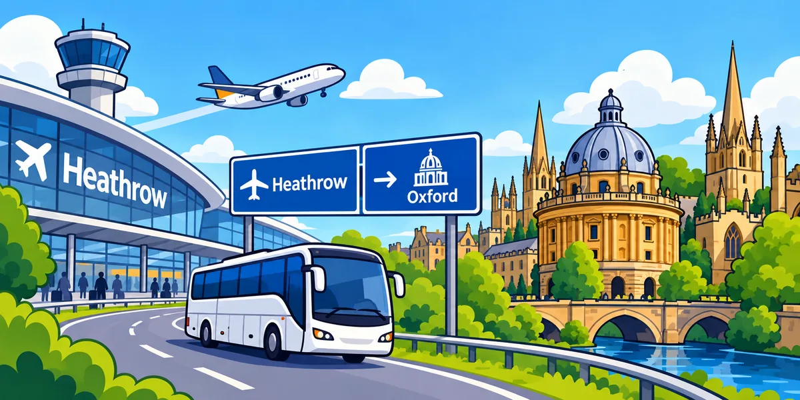

The Airline runs directly between Heathrow and Oxford, day and night, so there is no London rail interchange.
Heathrow Airport → Oxford
Heathrow to Oxford: is there a direct train? Coach vs rail options
Oxford is west of London, so travelling into central London first is not always the simplest choice. If you are searching for a Heathrow to Oxford train, the key fact is that there is no direct rail service. This guide compares the direct Heathrow to Oxford coach with the main rail option via London Paddington and door-to-door transfers, including luggage, family and late-arrival trade-offs.
Direct coach: yesDirect train: noCoach operates 24/7
Checked against operator information · 15 October 2026

Heathrow to Oxford train: quick answerDirect coach Train via Paddington Taxi / private transfer
Is there a direct train from Heathrow Airport to Oxford?
No. There is no direct train from Heathrow to Oxford. If you want to travel mainly by rail, a common route is Heathrow → London Paddington, then a Great Western Railway service from Paddington to Oxford. That means at least one change and extra luggage handling.
Travel from Heathrow to Paddington, then change for a Great Western Railway train to Oxford. Compare the whole journey, not only the train time.
Door to door with no change. It becomes more competitive when several travellers split one vehicle quote.
Best starting point: if your priority is the fewest changes after a flight, compare the direct coach first. If you strongly prefer rail or need an onward train connection from Oxford, compare the Paddington rail route.
Personal route check
Build your Heathrow → Oxford plan
Tell us your Heathrow terminal, where in Oxford you are going, when you land and how much luggage you have. We will show the journey effort — changes, walking, luggage handling and door-to-door convenience — and explain the best fit for those inputs.
Your personalised comparison will appear here.We use your destination, landing time, group size and luggage to explain the trade-offs.
This is decision support, not live availability. Always verify the current timetable, disruption status and final fare with the operator before travel.
At a glance
Heathrow to Oxford train vs direct coach: compare the whole journey
The train is not direct. Use this table to compare changes, journey effort and luggage handling, then check the live operator timetable or quote before booking.
| Option | Direct? | Typical time | Often suits | Watch for |
|---|---|---|---|---|
| Direct coach | Yes | ~80–90 min | Solo travellers, luggage, late arrivals | Road traffic; terminal stop |
| Train | No | ~1h30–1h50+ | Rail preference, onward rail connections | At least one change; luggage during interchange |
| Taxi / private transfer | Yes, door to door | ~60–90+ min | Families, groups, lots of luggage | Higher cost; traffic affects time |
Heathrow to Oxford: direct coach or rail with a change?
The most important fact is simple: there is a direct coach from Heathrow to Oxford, but there is no direct train. The Airline coach runs between Heathrow and Oxford 24/7/365. Rail can still work well, but it normally means travelling via London Paddington or another interchange before continuing to Oxford.
That difference matters after a flight. A rail journey may feel faster on paper for part of the route, but a direct coach can remove station changes and luggage handling.
Choose by traveller type
Which Heathrow to Oxford option fits your trip?
The direct coach is the first option to compare because it avoids a central-London rail transfer and the operator publishes an advance single fare.
The Airline operates 24 hours a day. Still check the exact overnight departure after your flight date is known.
Compare the total coach fare against a fixed private-transfer quote. The price gap can narrow once several tickets are added together.
A private transfer may save a second taxi or bus after arriving at Gloucester Green or Oxford station.
Avoid a common mistake
Train from Heathrow to Oxford: what the journey actually involves
There is no direct rail service between Heathrow Airport and Oxford. A train journey from Heathrow to Oxford normally means first reaching London Paddington and then changing to a Great Western Railway service for Oxford. Compare the whole itinerary — airport rail leg, interchange, Oxford train and the final trip from Oxford station to your address.
Before you book
Check the live Heathrow to Oxford coach departure for your terminal, the full interchange plan if you prefer the train, and a fixed taxi or private-transfer quote if you are travelling as a group. Comparing the whole journey is more useful than comparing only the first ticket price.
Group-cost reality check
Split a private-transfer quote per traveller
A £120 vehicle can look expensive until it is compared with several individual tickets and a final taxi. Enter any quote you receive; Terminal2City does not invent the fare.
Enter a transfer quote
Official live information
Check the operator before you travel
Timetables, disruptions and fares can change. These official links are the final check before booking.
Terminal2City is an independent route guide. Operator names are used to help travellers identify the relevant service; no affiliation is implied unless explicitly stated.
Frequently asked questions
Heathrow Airport → Oxford FAQ
Is there a direct bus or coach from Heathrow Airport to Oxford?
Yes. Oxford Bus Company’s Airline service connects Heathrow and Oxford directly and operates day and night. Check the live timetable for your terminal and travel date.
Is there a direct train from Heathrow to Oxford?
No. Rail journeys require at least one change. Common routings involve travelling toward London Paddington and then taking a Great Western Railway service to Oxford.
How long does Heathrow to Oxford take?
The direct coach is commonly around 80–90 minutes in normal conditions, while road and rail times vary with traffic, interchange time and the exact service. Allow extra time rather than planning around the minimum published journey.
How much is the Heathrow to Oxford coach?
Oxford Bus Company lists a £25 adult one-way online fare from 19 July 2026, with fares subject to change. Check the operator before buying.
What is easiest with several suitcases?
A direct coach avoids rail changes; a private transfer removes the final station-to-address leg as well. Compare those practical advantages against the total price for your group.
Compare another London airport route
Browse route guides for all six main London airports, including Heathrow, Gatwick, Stansted, Luton and London City.